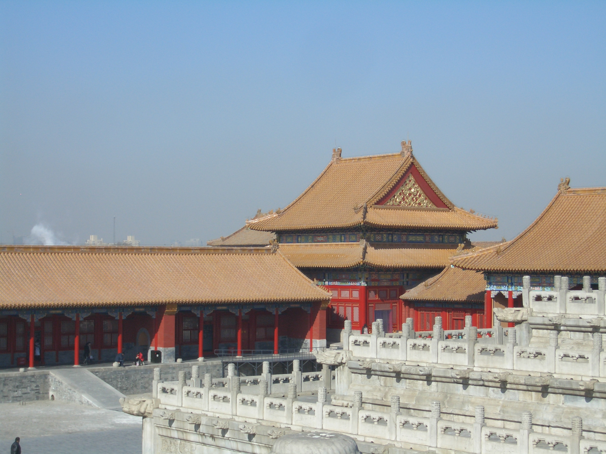
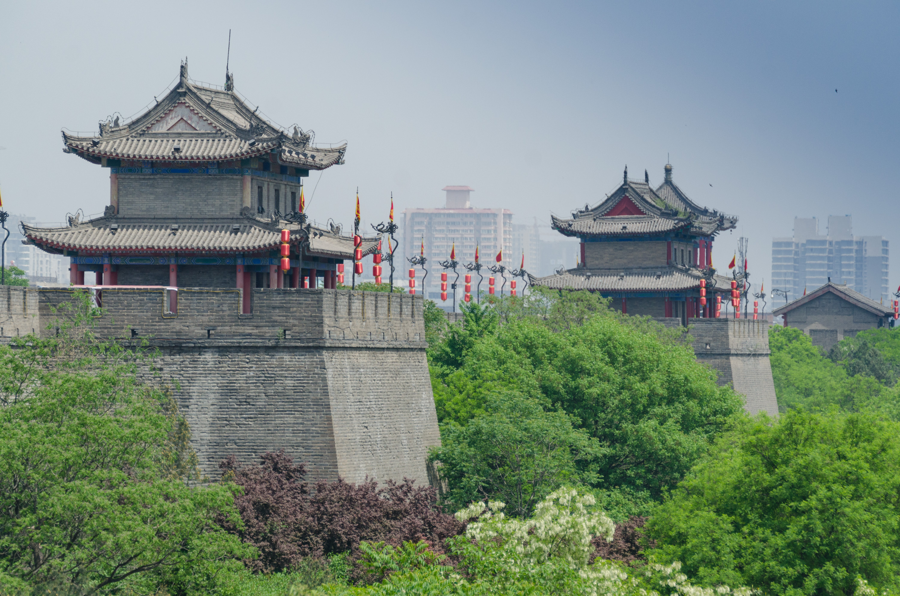
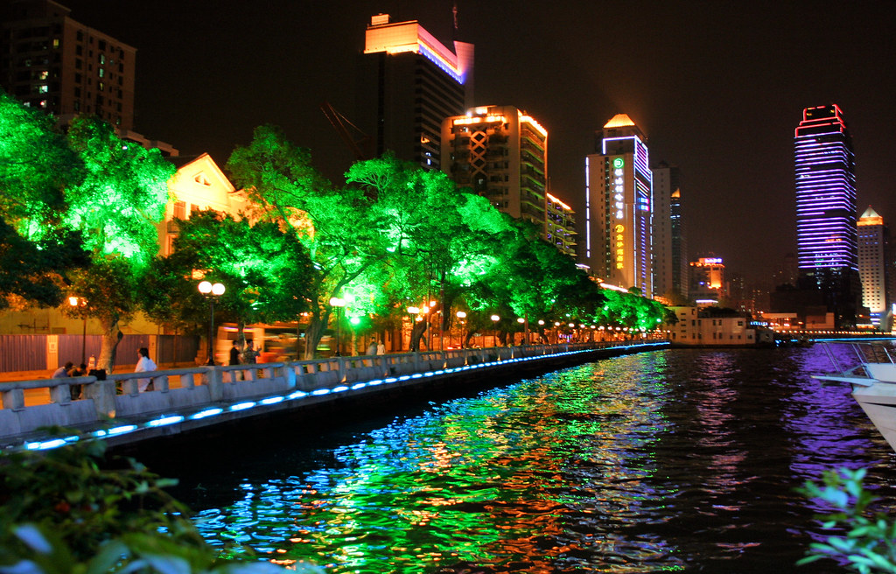

Pekín
Fechas disponibles: 12-19 Marzo
Capital histórica con monumentos icónicos como la Ciudad Prohibida, la Plaza de Tiananmén y la Gran Muralla en sus alrededores.


Fechas disponibles: 12-19 Marzo
Capital histórica con monumentos icónicos como la Ciudad Prohibida, la Plaza de Tiananmén y la Gran Muralla en sus alrededores.
Fechas disponibles: 22-29 Abril
Ciudad moderna y cosmopolita. Disfruta del skyline de Pudong, el paseo del Bund y una vibrante vida nocturna.

Fechas disponibles: 10-17 Mayo
Antigua capital imperial famosa por el Ejército de Terracota. Pasea por sus murallas y descubre su rico legado histórico.

Fechas disponibles: 3-10 Julio
Importante centro comercial del sur de China. Destaca por su gastronomía cantonesa y su mezcla de tradición y modernidad.
Fechas disponibles: 15-22 Septiembre
Conocida por sus pandas gigantes y su ambiente relajado. Disfruta de su cocina picante y sus casas de té tradicionales.